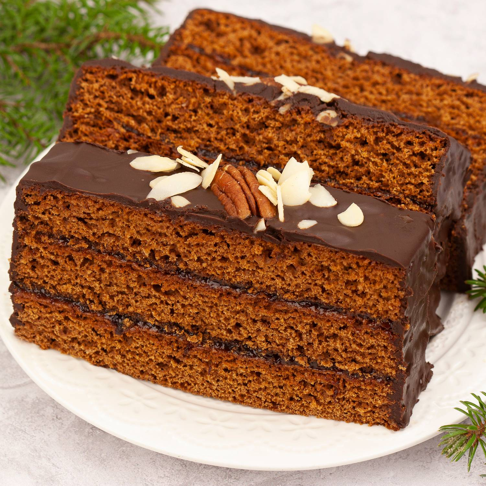

Przepis na piernik
składniki na piernik

- 2 szklanki mąki pszennej np. tortowej lub uniwersalnej - 320 g
- 100 g prawdziwego masła - pół klasycznej kostki
- 1 szklanka mleka - 250 ml
- 150 g drobnego cukru - około 3/5 szklanki
- 3 łyżki płynnego miodu np. akacjowy - 60 g
- 2 średnie jajka
- 3 łyżki powideł śliwkowych lub dżemu z czarnej porzeczki - 80 g
- 2 łyżeczki sody oczyszczonej
- 2 łyżki przyprawy do piernika - 20 g
- 1 łyżka kakao w proszku - 10 g
składniki na polewę i przełożenie
- około 140 g powideł śliwkowych lub dżemu z czarnej porzeczki
- tabliczka czekolady deserowej - 100 g
- niecała 1/3 szklanki śmietanki słodkiej 30 % - około 80 ml
- orzechy na posypkę: włoskie, pekan, migdały
przepis
W niedużym rondelku umieść razem: 100 gramów
prawdziwego masła (zwykłe lub klarowane); trzy łyżki
płynnego miodu np. akacjowego, czyli około 60 gramów miodu
(naturalny lub sztuczny); trzy łyżki powideł śliwkowych lub
dżemu z czarnej porzeczki, czyli około 80 gramów (u mnie dżem z
czarnej porzeczki); jedną łyżkę kakao, czyli około 10 gramów kakao;
dwie łyżki dobrej jakości przyprawy do piernika, czyli około 20 gramów
mieszanki przypraw.